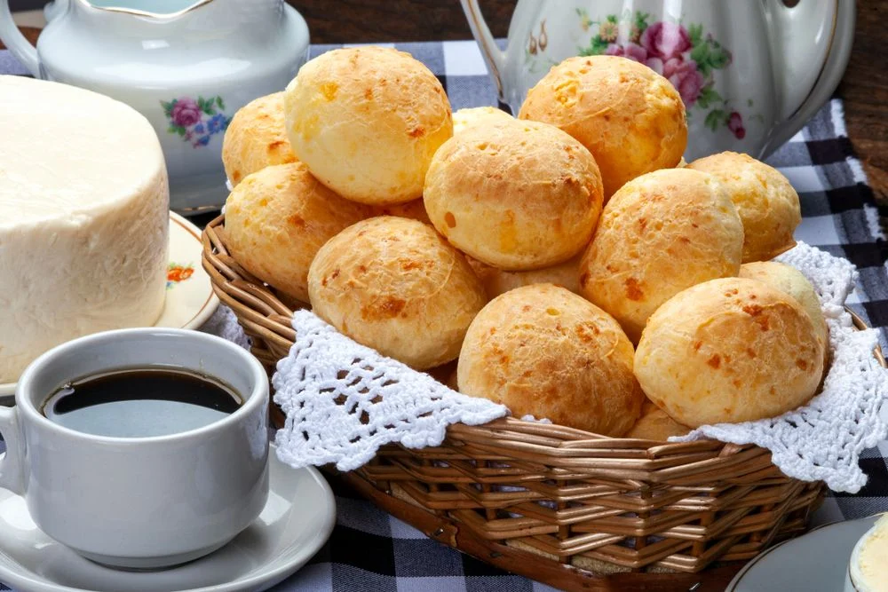

Pão de Queijo - A brazilian breakfast classic

Description
This brazilian classic is a traditional food from the state of Minas Gerais - where its people are famous
for eating a lot of cheese, all the time.Friendly warning though, despite the literal translation being
"cheese bread", it's not a cheese bread. I mean, it is, but not as you would normally think of a cheese bread.
It is an awesome snack for any period of the day, but we usually eat it during breakfast. It comes in different
sizes: regular portions (see image on top of page) or in small bite sizes (usually 2-3 times smaller than the
individual portion). Some people put Nutella on it - I've done it, and it works - but we usually eat it as it comes,
or with some cream cheese on it.
Ingredients
- Tapioca flour (that's why I said it isn't like a cheese bread, and makes it a gluten-free food!)
- Butter (insert Julia Childs meme here)
- Milk
- Salt
- Parmesan cheese (yeah baby)
- White cheddar cheese (this ain't Cheetos or Trump to be orange)
- Eggs
Steps
- Preheat your oven to 175°C (375°F, for non-metric people)
- Put the butter, milk and salt to a medium saucepan and heat over high heat
- Bring it to a boil, and remove it from the heat
- Pour the hot liquid on a bowl, add tapioca flour and mix until gets a smooth texture
- Set it aside for 10-15 minutes while the dough rests
- After the dough has rested, add eggs and cheeses to the dough and mix them
- Take scoops out of the dough, and roll them up to make little balls (recomended to grease your hands with oil to do this)
- Put them in a sheet pan, and put them on the oven
- Let them bake for 10-12 minutes, until the tops are lightly browned
- Eat them while warm (not hot, be careful)
Return to top
Return to main page